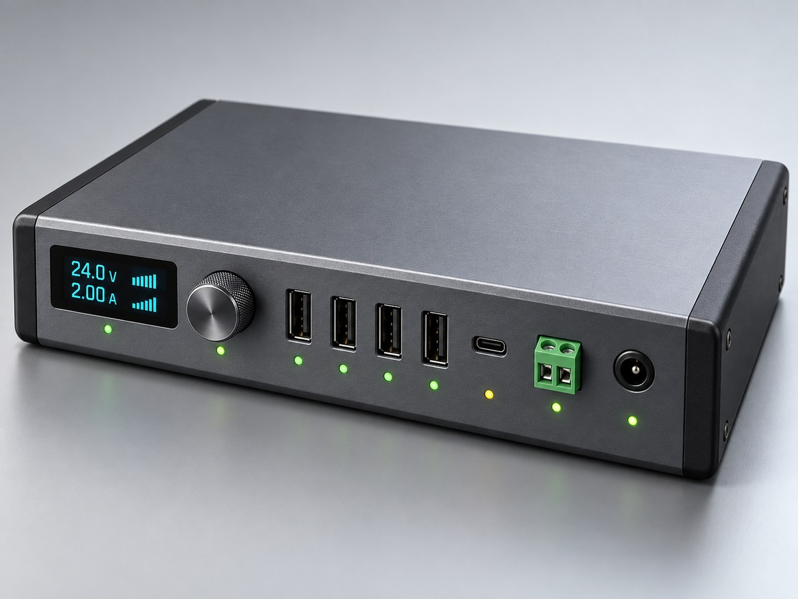

一根线接电脑，七路独立供电，3.3V 到 24V 全覆盖，每一路的电流平台都看得见
单做电源是红海。差异化不在供电，在于它自己是一台 EI TOKEN 认得出的设备——平台知道每个口挂了什么、吃多少电、哪一路过流。做电源的厂商做不了这件事，因为他们没有平台。
先把要支持的设备列全，再倒推需要哪些输出。
| 设备 | 供电要求 | 接哪路 | 备注 |
|---|---|---|---|
| 树莓派 5 | 5V / 5A（PD） | CH5 | 须声明 5V5A，否则降频 |
| 树莓派 4B / 3B+ | 5V / 3A | CH5 | |
| Jetson Orin Nano | 19V / 2.4A 桶插 | CH7 | 19V 预设档直连 |
| Jetson Xavier NX / Nano | 19V / 5V 桶插 | CH7 | |
| 地瓜 RDK X5 / X3 | 5V / 3A USB-C | CH5 | |
| ESP32 / Arduino / STM32 | 5V / <0.5A | CH1–4 | 四块同时插，互不影响 |
| M5 StackChan（CoreS3） | 5V / 1A | CH1–4 | 转头峰值 1.5A |
| SG90 舵机 ×4 | 5V / 2.4A 峰值 | CH6 | 堵转靠限流保护 |
| MG996R 大舵机 ×2 | 6.0V / 5A 峰值 | CH6 | 6V 档扭力最佳 |
| WS2812 灯带 60 灯 | 5V / 3.6A | CH6 | 大电流走端子 |
| L298N / TB6612 + 电机 | 6–12V / 2A | CH6 | |
| 六轴机械臂 | 12V / 5A | CH6 | 多关节同动峰值高 |
| 42 步进 + TB6600 | 24V / 3A | CH6 | 24V 档的意义所在 |
| 工业传感器 / RS485 | 24V / <1A | CH6 | 光电、接近、编码器 |
| 激光雷达 C1 / LD19 | 5V / 0.5A | CH1–4 | |
| 路由器 / 工控机 | 12V / 2A 桶插 | CH7 | 12V 预设档 |
| 3.3V 裸模块 | 3.3V / <1A | CH6 | 可调轨下限 |
| 笔记本 / 手机 | PD 5–20V | CH5 | 顺手当 100W 充电器 |
| 项 | 规格 | 说明 |
|---|---|---|
| 输入 | DC 5.5×2.5 24V / 6.5A（156W） 或 USB-C PD 20V/5A（100W） | 自动切换。DC 为主，PD 为便携备用（降额 90W） |
| 数据上行 | USB-C ×1 → 电脑 | 4 口 Hub 直通，与供电隔离 |
| CH1–4 | USB-A 5V / 单口 2.4A，合计 ≤6A | 带 BC1.2 握手 |
| CH5 | USB-C PD 最高 100W 5V/5A · 9V/3A · 12V/3A · 20V/5A | 含 5V/5A 特殊档与 PPS |
| CH6 | 端子 3.3–24V 可调 / 5A，步进 0.1V | Buck-Boost，非 5V 档需确认 |
| CH7 | DC 桶插 5 / 12 / 19 / 24V 预设 / 5A | 给只有桶插口的设备 |
| 总功率 | 150W（DC）/ 90W（PD） | 超预算按 CH5 > CH7 > CH6 > CH1–4 降载 |
| 计量 | 每路 V / A / W ±1% · 10Hz | INA3221 ×3，支持电流曲线回放 |
| 保护 | 过流 · 短路 · 过压 · 过温 · 防反接 · 软启动 | 硬件 eFuse + MCU 软件双重 |
| 显示 | 1.3" OLED + 旋钮，每路双色 LED | 绿=正常，红=保护，黄=高压档 |
| 主控 | ESP32-S3（USB CDC + WiFi） | 平台可识别、可下指令、可 OTA |
| 尺寸 | 约 165 × 110 × 40 mm | 铝合金型材兼散热 |
┌──────────── 输入（与电脑完全无关）────────────┐
│ DC 24V/6.5A 桶插 ──┐ │
│ USB-C PD 20V/5A ───┼─► ORing ─► 24V 主母线 │
└─────────────────────┴────────────────────────┘
│
┌───────────┬─────────┼──────────┬────────────┐
▼ ▼ ▼ ▼ ▼
┌─────────┐ ┌─────────┐ ┌────────┐ ┌────────┐ ┌────────┐
│ 5V/8A │ │ PD 源 │ │ Buck- │ │ Buck │ │ 3.3V │
│ 同步Buck│ │ Buck- │ │ Boost │ │ 5/12/ │ │ 辅助 │
│ │ │ Boost │ │3.3–24V │ │ 19/24V │ │ MCU 用 │
└────┬────┘ └────┬────┘ └───┬────┘ └───┬────┘ └────────┘
┌────┴────┐ │ │ │
▼ ▼ ▼ ▼ ▼ ▼ ▼
eFuse ×4 eFuse eFuse eFuse ← 每路独立限流
│ │ │ │ │ │ │
CH1-CH4 CH5 CH6 CH7
USB-A ×4 USB-C PD 螺丝端子 DC 桶插
INA3221 ×3 ─ I2C ─► ESP32-S3 ─► USB CDC ─► EI TOKEN
├─► 7× 使能 + 故障回读
├─► OLED + 旋钮 + 14× LED
└─► NTC ×2 过温降载
数据通路（独立）：电脑 USB-C ─► Hub ─► D+/D- 直通 CH1–4
要输出 24V 就不能靠升压——大功率 Boost 的效率和纹波都不如 Buck。取 24V 母线 + 各路降压，七路里六路是纯 Buck，只有 CH6 为兼顾 3.3V 下限用 Buck-Boost。
接 PD 时母线只有 20V，24V 档自动锁定，界面灰掉并提示"需接 24V 适配器"。
| 轨 | 拓扑 | 主芯片（样机 / 量产） |
|---|---|---|
| 5V/8A | 同步 Buck | TPS56637 / SY8205F |
| CH5 PD | Buck-Boost | IP2368 + HUSB311 |
| CH6 可调 | Buck-Boost | TPS55288 / SC8815 |
| CH7 档位 | 同步 Buck | SY8205F + 数字电位器 |
| 3.3V 辅助 | LDO | AMS1117-3.3 |
每路输出前串一颗 eFuse——这是和廉价 Hub 最本质的区别，它们只有一个总保险，一路短路全盘掉电。样机用 TPS2595，量产换 SY6280 / AOZ1360 + 采样电阻。
满载 150W、90% 效率，损耗约 15W，集中在四颗开关电源。铝型材外壳兼散热器，功率区垫导热硅胶片贴壳。NTC ×2 贴主电感与 Buck-Boost 区，70°C 降载、85°C 切断。不上风扇——桌面产品噪音比温度更影响体验。
| 层 | 做法 | 是否自动 |
|---|---|---|
| 协议级 | PD / PPS / BC1.2 握手，对方说要多少给多少 | 全自动，零风险 |
| 负载级 | 恒压 + 可编程限流 + 软启动 | 全自动，电源本分 |
| 电压级 | 识别设备 → 自动切电压档 | 不自动 |
主控选 ESP32-S3 不是因为最便宜（CH32V203 更便宜），而是因为 EI TOKEN 已经完整支持它：这台底座本身就是平台能一键烧录的设备，固件更新走平台；原生 USB CDC 免驱；VID 0x303A 一插上就被认出。
# 握手 > ID < EITDOCK v1 sn=D7A7F2C1 ch=7 vin=24.1 src=dc pmax=150 # 状态，平台 10Hz 轮询 > ST < 1 usb-a on 5.02 0.42 2.1 ok < 5 usb-c on 5.09 4.62 23.5 pd5v5a 树莓派 5 < 6 term on 12.01 4.88 58.6 ilim 机械臂到限流 < 7 barrel on 19.02 2.10 39.9 ok Jetson < total 133.5W / 150W temp 61C # 控制 > ON 3 / OFF 3 / LIM 6 5.0 / SET 6 7.4 / SET 7 19 / CONFIRM / LOG 6
平台侧：案例的 case.json 加一段 "power": { "v": 7.4, "a": 2.5, "ch": "term" }，打开案例即提示「本例需要 7.4V/2.5A，是否切换 CH6？」，点一下自动配置。烧录中电流异常直接提示「CH6 触发限流，检查舵机是否卡死」。
1000 台批量估算，人民币，不含电源适配器。
| 模块 | 主要物料 | 成本 |
|---|---|---|
| 主控与显示 | ESP32-S3-WROOM-1 · OLED · 编码器 · 14×LED | ¥34 |
| 输入级 | CH224K · ORing P-MOS ×2 · TVS · 座子 | ¥14 |
| 5V/8A 轨 | TPS56637 · 电感 · 电容组 | ¥17 |
| CH5 PD 源 | IP2368 · HUSB311 · 电感电容 | ¥24 |
| CH6 可调轨 | TPS55288 · 电感 · 端子 | ¥29 |
| CH7 档位轨 | SY8205F · 数字电位器 · DC 座 | ¥16 |
| 七路保护 | SY6280 ×4 · AOZ1360 ×2 · BC1.2 ×4 | ¥23 |
| 计量 | INA3221 ×3 · 分流电阻 ×7 · NTC ×2 | ¥14 |
| USB Hub | SL2.1A · USB-A 座 ×4 · ESD | ¥11 |
| PCB 与贴片 | 4 层 115×150mm 双面贴装 | ¥24 |
| 结构件 | 铝型材 · 端盖 ×2 · 螺丝 · 脚垫 · 导热片 | ¥30 |
| 包装 | 彩盒 · 说明卡 · 泡棉 | ¥7 |
| BOM 合计 | ¥243 | |
| 良率与测试损耗 8% | ¥19 | |
| 落地成本 | 零售 ¥499 裸机 / ¥599 含 150W 适配器 | ¥262 |
毛利率约 47%。首批 500 台，打样 + 型材 CNC（无需注塑模）约 ¥4–6 万。
| 项目 | 是否必须 | 说明 |
|---|---|---|
| CCC（国内） | 不需要 | DC 输入配件，不在强制目录 |
| CE / FCC | 出口才需要 | EMC 为主，约 ¥1.5–3 万 |
| USB-IF | 非必须 | 不申请就不能打 USB 官方 logo |
| RoHS | 建议做 | 教育与企业采购常被要求 |
| 阶段 | 周期 / 成本 | 产出与验收 |
|---|---|---|
| V0 验证 | 2 周 / ¥1200 | 现成模块洞洞板搭一台。验收：树莓派 5 与 Jetson Orin Nano 同时稳定供电、七路电流可读、平台能识别并下指令。给 3–5 个真实用户试用，确认需求真伪。 |
| V1 样机 | 7 周 / ¥2.5 万 | PCB 打样 3 版 + 铝型材手板。验收：满载 150W 连续 4 小时壳温 <60°C；七路短路各 100 次不损坏；误切高压保护 100% 动作；BC1.2 对 10 款板子握手成功。 |
| V2 小批 | 6 周 / ¥15 万 | 500 台试产 + 测试治具。验收：全测七路精度 ±1%，老化 2 小时零故障。 |
| 平台联调 | 与 V1 并行 | case.json 加 power 字段；设备页支持 EI DOCK 面板；烧录接入过流诊断。 |